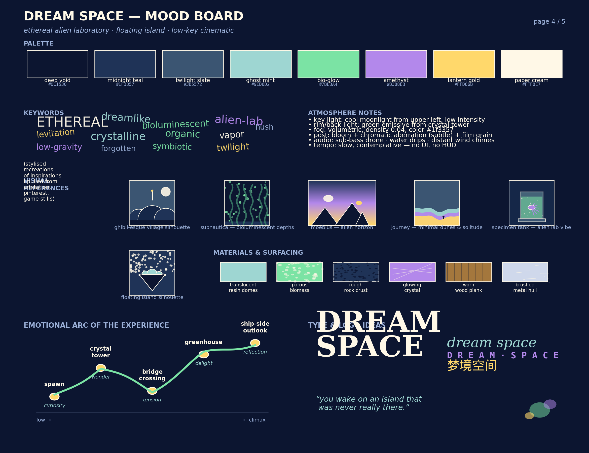
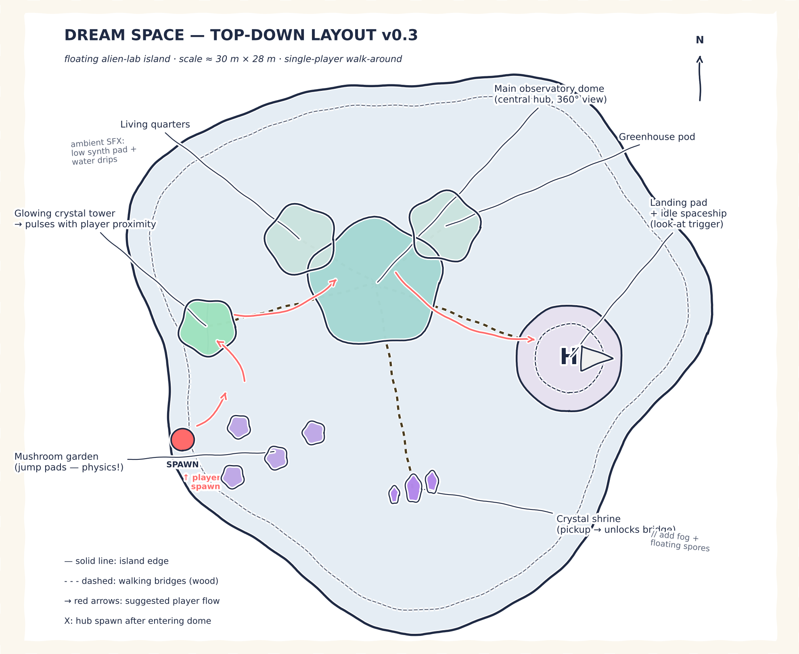
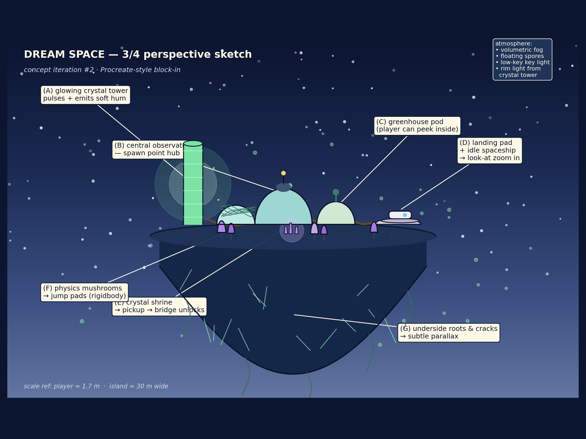
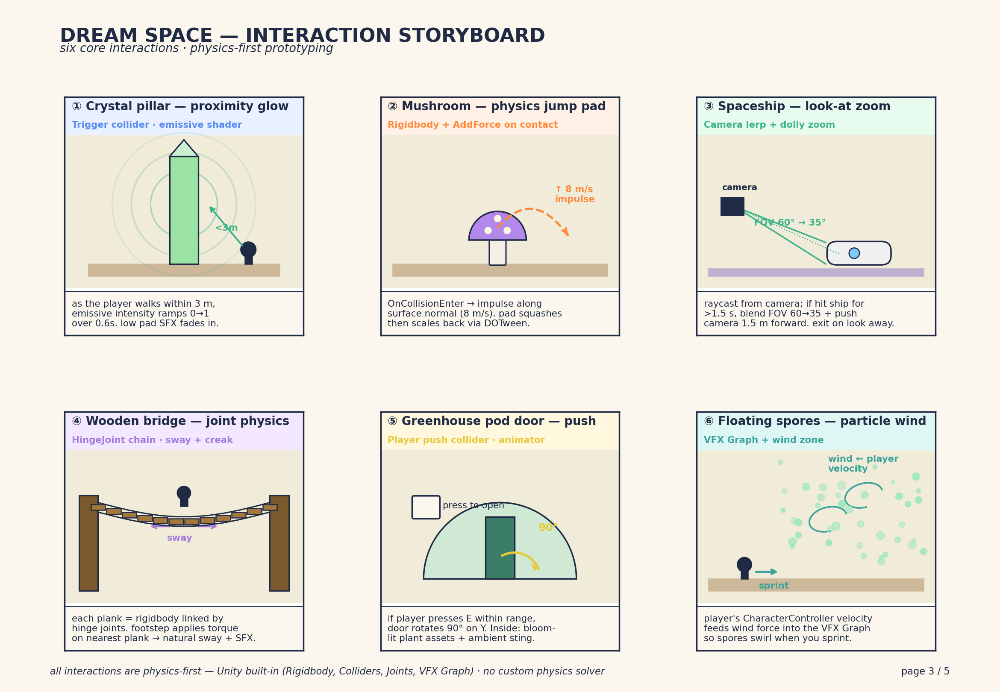
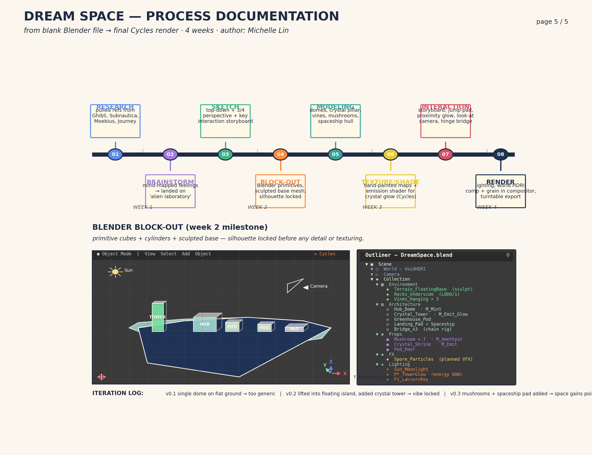
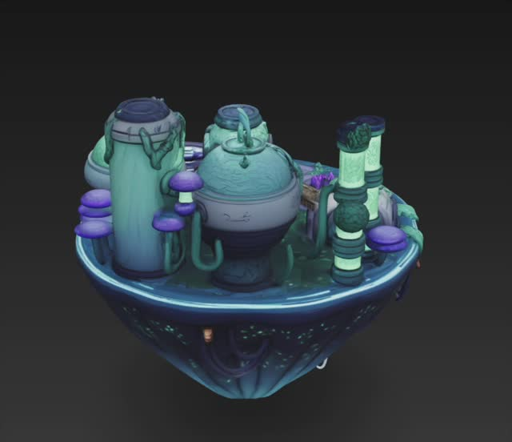
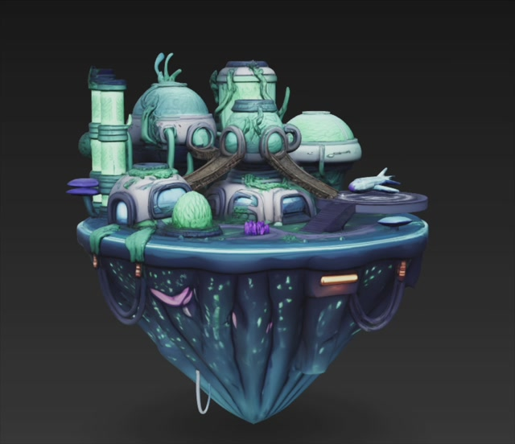
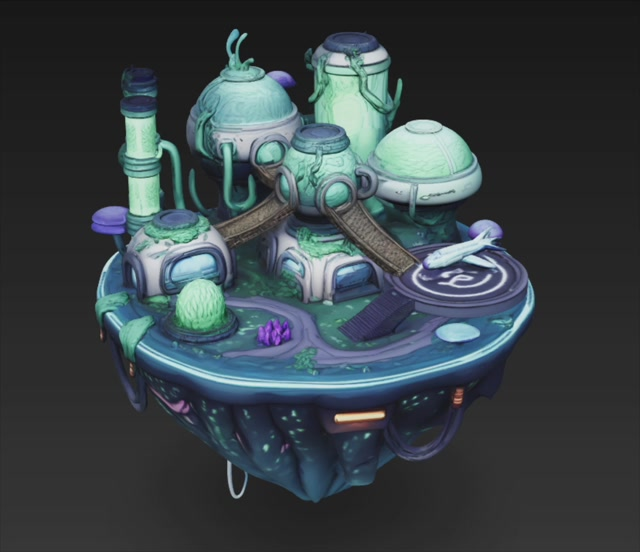

A floating alien-laboratory island modelled in Blender — a place half-remembered from a dream, where bioluminescent crystals hum and mushroom pads bounce you between domes.
The brief asked for a "dream space". My recurring dream lately has been standing on a small island that floats in indigo void, surrounded by architecture that looks half-grown, half-built — domes covered in vines, pillars that glow from inside, a tiny spaceship parked on a quiet pad. Nothing threatening, no goals, just the urge to wander and touch things.
I distilled this down to three pillars before sketching:
"You wake on an island that was never really there."
Before drawing anything I pulled references from Studio Ghibli (architecture silhouettes), Subnautica (bioluminescence underwater), Moebius (alien horizons + flat colour), and Journey (minimalism & emotional pacing). I locked the palette: deep voids, mint domes, bio-glow green, amethyst crystal, a single warm gold accent for "lantern" beats.

ethereal alien-lab low-gravity bioluminescent crystalline twilight
I started with a paper-sketch top-down to figure out scale and player flow. Spawn is on the south-west tip; the player walks past mushroom pads, climbs to the crystal tower, drops into the central dome (hub), then crosses bridges out to the greenhouse and landing pad. Total walking time ≈ 90 s if you don't stop — but the design assumes you stop.

Once the plan worked, I did a 3/4 perspective in Procreate to set the silhouette & lighting direction. The crystal tower is the only vertical accent on the left so it reads as a beacon; everything else sits low to keep the sky readable.

The brief asks us to "make good use of built-in physics", so even though the deliverable for this milestone is a fully-textured Blender scene, I storyboarded the six interactions I'd wire up when bringing the assets into Unity: Rigidbody jump pads, HingeJoint bridges, proximity emissive triggers, look-at FOV blends, push-doors, and a wind-driven spore VFX. Each is intentionally simple — built-in components only.

Eight phases across four weeks. Week 2 was a pure block-out pass in Blender — primitive cubes, cylinders and a sculpted base mesh — so the silhouette and scale were locked before any detail or texturing happened. The outliner on the right shows the final scene tree.

Cycles renders / EEVEE turntable from the final Blender scene. The crystal tower glow uses an Emission shader driven by a Voronoi pattern; the underside cracks are stylized texture paint over a sculpted mesh.


